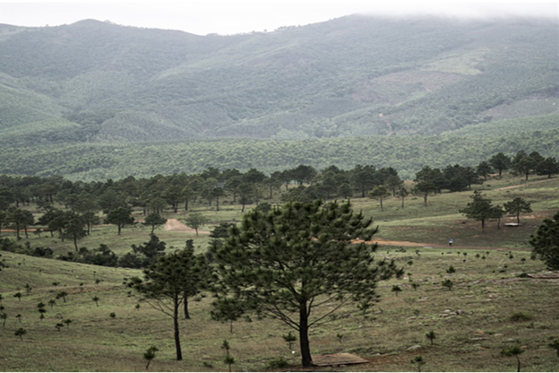

Activity 1
1. Listen to the audio description or examine Figure 1 and identify the relief features:

Figure 1: Various earth’s relief features
2. Examine and explain the earth’s relief features found in the environment you live in.